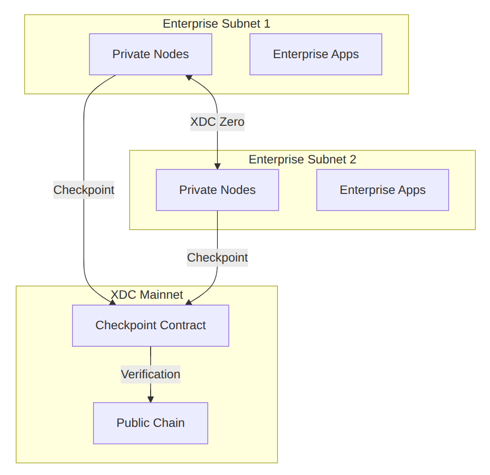

Private Subnets for Enterprise¶
XDC Private Subnets enable enterprises to deploy dedicated, application-specific blockchains while maintaining interoperability with the XDC mainnet.
Overview¶
Private Subnets are sovereign blockchain networks that:
- Run independently with customizable consensus parameters
- Connect to XDC mainnet for cross-chain communication
- Maintain privacy for sensitive enterprise data
- Scale horizontally for specific use cases
Architecture¶

Key Features¶
| Feature | Description |
|---|---|
| Sovereign Consensus | Customize block time, validator set, and consensus rules |
| Data Privacy | Transaction data stays on your private network |
| Mainnet Anchoring | Periodic checkpoints to XDC mainnet for security |
| Cross-Chain Bridge | Transfer assets between subnet and mainnet |
| Permissioned Access | Control who can participate in the network |
Use Cases¶
Regulated Financial Services¶
Deploy a private subnet for banking operations where data privacy and regulatory compliance are paramount.
Supply Chain Consortiums¶
Create a shared private network for supply chain partners with controlled access.
Healthcare Data¶
Manage sensitive patient data with HIPAA-compliant private infrastructure.
Government Applications¶
Deploy government services with full data sovereignty.
Deployment Options¶
Option 1: Fully Private¶
- All nodes operated by your organization
- Complete data isolation
- No external connectivity
Option 2: Consortium¶
- Multiple organizations operate nodes
- Shared governance
- Permissioned participation
Option 3: Hybrid¶
- Private execution layer
- Public verification via mainnet
- Selective data disclosure
Quick Start¶
Prerequisites¶
- Docker and Docker Compose
- Minimum 3 nodes for production
- XDC for mainnet checkpointing fees
Deploy a Subnet¶
# Clone the subnet deployment tools
git clone https://github.com/XinFinOrg/XDC-Subnet.git
cd XDC-Subnet
# Configure your subnet
cp .env.example .env
nano .env
# Set your configuration
SUBNET_NAME=my-enterprise-subnet
BLOCK_TIME=2
VALIDATORS=3
CHECKPOINT_INTERVAL=900
Configuration File¶
# subnet-config.yaml
subnet:
name: "Enterprise Subnet"
chainId: 551 # Unique chain ID
consensus:
type: "XDPoS"
blockTime: 2
epochLength: 900
validators:
count: 3
minStake: 10000000 # 10M XDC equivalent
checkpoint:
enabled: true
mainnetRPC: "https://rpc.xinfin.network"
interval: 900 # blocks
network:
p2pPort: 30303
rpcPort: 8545
wsPort: 8546
Start the Network¶
# Initialize genesis
./scripts/init-genesis.sh
# Start validator nodes
docker-compose up -d
# Verify network
curl -X POST http://localhost:8545 \
-H "Content-Type: application/json" \
-d '{"jsonrpc":"2.0","method":"eth_blockNumber","params":[],"id":1}'
Checkpointing to Mainnet¶
Subnets periodically anchor their state to XDC mainnet for security:
// Checkpoint contract on mainnet
interface ICheckpoint {
function submitCheckpoint(
uint256 subnetChainId,
uint256 blockNumber,
bytes32 blockHash,
bytes32 stateRoot,
bytes calldata validatorSignatures
) external;
function verifyCheckpoint(
uint256 subnetChainId,
uint256 blockNumber
) external view returns (bool);
}
Cross-Chain Communication¶
XDC Zero Bridge¶
Transfer assets between your subnet and mainnet:
const { XDCZero } = require('@xdc/zero-sdk');
const bridge = new XDCZero({
mainnetRPC: 'https://rpc.xinfin.network',
subnetRPC: 'https://your-subnet-rpc.com',
bridgeContract: '0x...'
});
// Lock tokens on mainnet, mint on subnet
await bridge.deposit({
token: '0x...', // Token address
amount: '1000000000000000000', // 1 token
recipient: '0x...', // Recipient on subnet
});
// Burn on subnet, release on mainnet
await bridge.withdraw({
token: '0x...',
amount: '1000000000000000000',
recipient: '0x...',
});
Security Considerations¶
Node Security¶
- Run nodes in secure, isolated environments
- Implement proper key management
- Regular security audits
Network Security¶
- Firewall rules for P2P ports
- TLS for RPC endpoints
- VPN for inter-node communication
Validator Management¶
- Multi-sig for validator changes
- Regular key rotation
- Monitoring and alerting
Pricing¶
| Component | Cost |
|---|---|
| Subnet deployment | Contact sales |
| Mainnet checkpointing | ~0.1 XDC per checkpoint |
| Cross-chain transfers | ~0.01 XDC per transfer |
| Support & maintenance | Custom pricing |
Support¶
For enterprise subnet deployment:
- Email: enterprise@xdc.org
- Documentation: Subnet Docs
- GitHub: XDC-Subnet